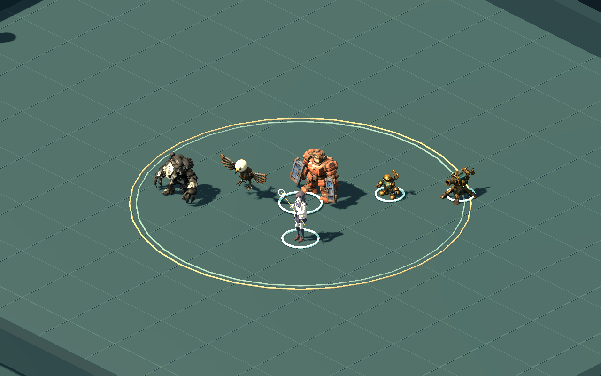
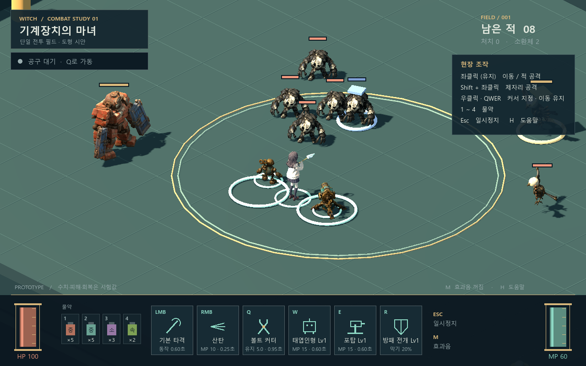
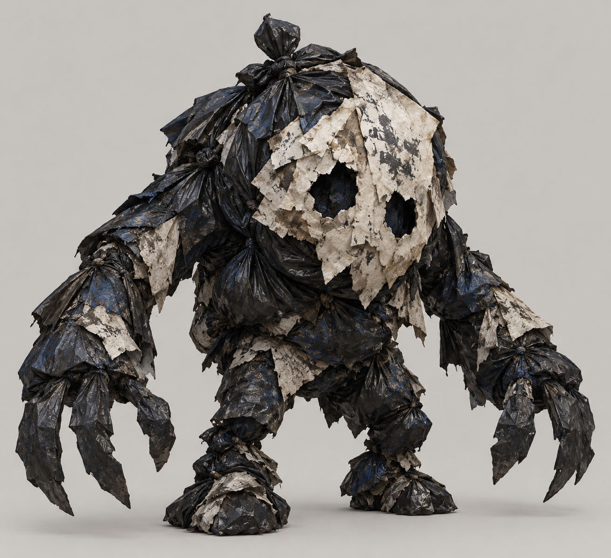
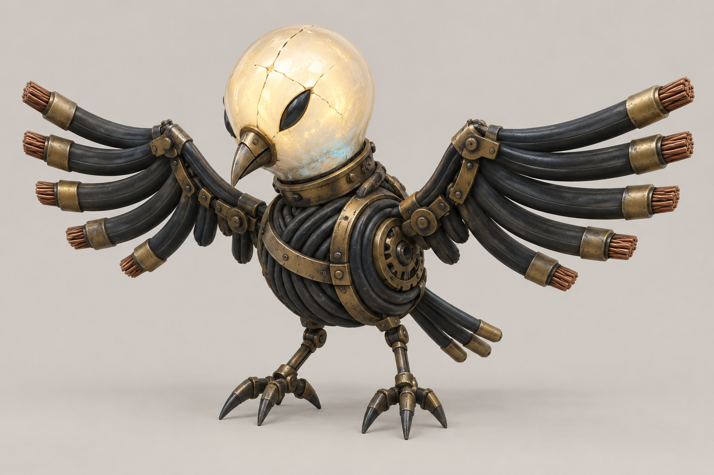
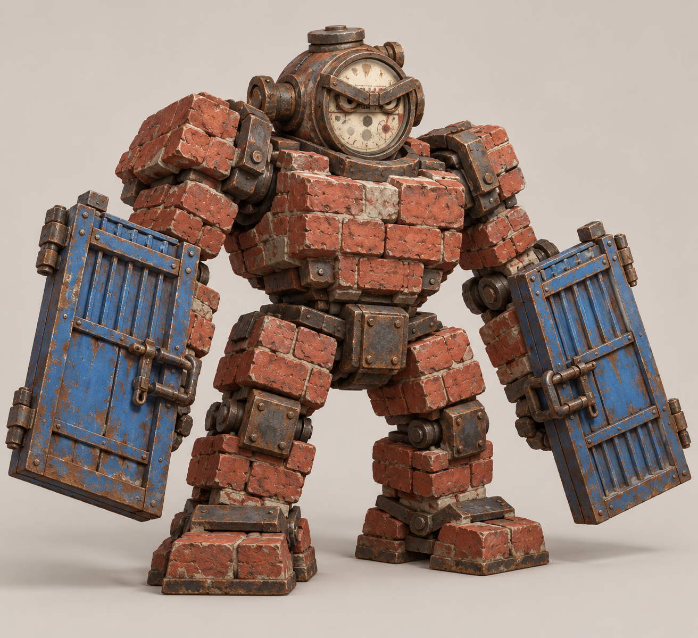
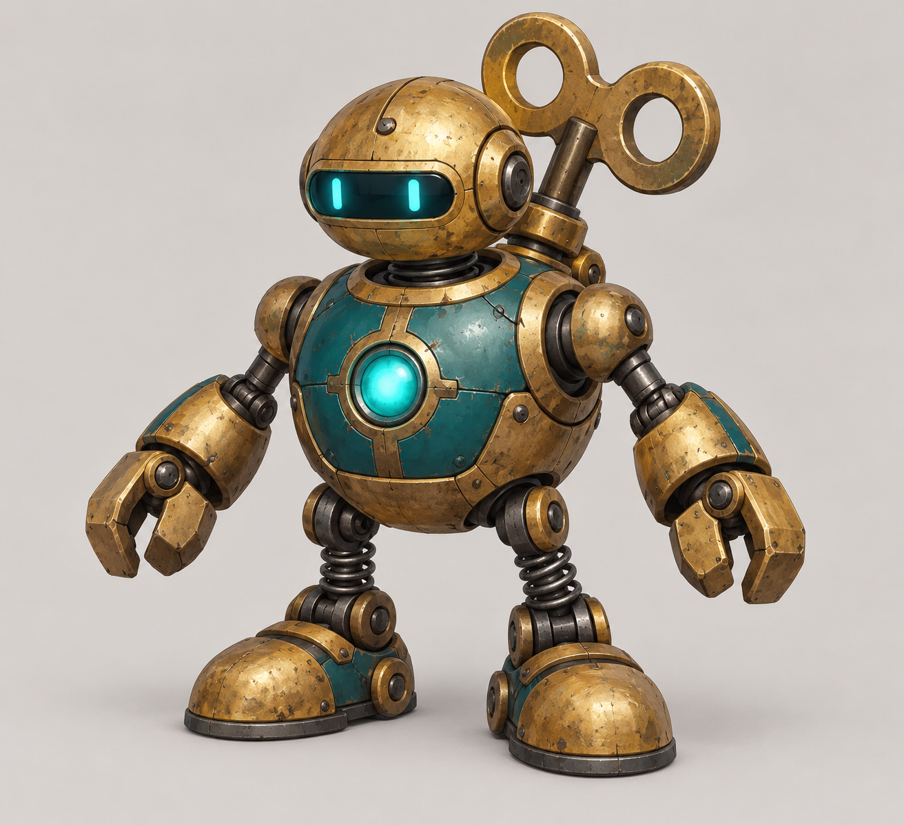
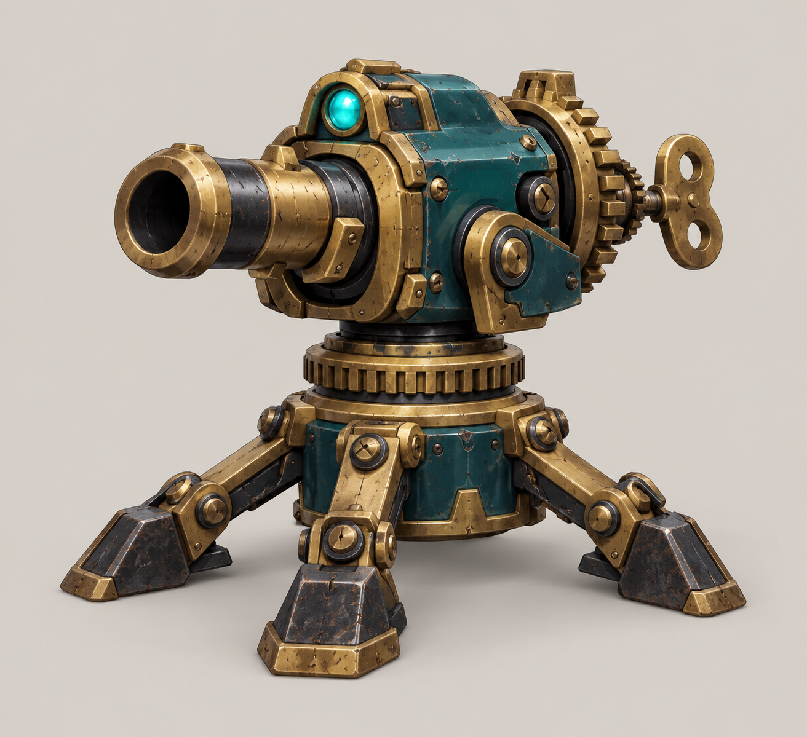

WITCH · COMBAT ACTORS · V1
몬스터 3종과 태엽 소환물
시나리오 초안 6장의 넝마귀·전선 까마귀·철문 아귀, 그리고 낡은 황동·청록의 태엽인형·자동포탑입니다. 실제 Tripo 모델을 경량화하고 현재 전투 시험판에 연결했습니다.
선택한 1.75배 카메라에서

왼쪽부터 넝마귀, 까마귀, 철문 아귀, 태엽인형, 포탑. 1280×800 실제 게임 캡처이며 페이지 폭에 맞춰 축소 표시됩니다. 원래 해상도로 보기
동작 확인
현재 전투 화면

모델링에 사용한 원화

그을음 넝마귀
전선 까마귀
철문 아귀
태엽인형
자동포탑게임용 자산
| 종류 | 삼각형 | 뼈 | 클립 |
|---|
| 그을음 넝마귀 | 12,000 | 14 | 5 |
| 전선 까마귀 | 10,000 | 11 | 5 |
| 철문 아귀 | 17,999 | 14 | 6 |
| 태엽인형 | 10,000 | 15 | 5 |
| 자동포탑 | 7,999 | 5 | 4 |
원본 GLB와 2K 텍스처를 별도 보존했습니다. 게임용은 1K PBR 텍스처, 최대 4개 뼈 영향, 합계 57,998개 삼각형입니다.
첫 연결본입니다. 원본이 붙어 있는 일부 관절의 접힘·늘어남은 남아 있습니다. 현재 클립을 실제 표시 크기로 확인한 상태이며, 최종 아트 승인·임의 자세 검증·최종 성능 예산 확정은 별도입니다.
GPU 런타임 1811개 검사, 25개 클립·반복 끝점·타격 시점·일시정지·사망 처리와 적 종류/보스/등급·피해/기본 실행 회귀를 확인했습니다. 기존 공격력·마나·이동 속도·충돌·AI 규칙은 유지합니다.